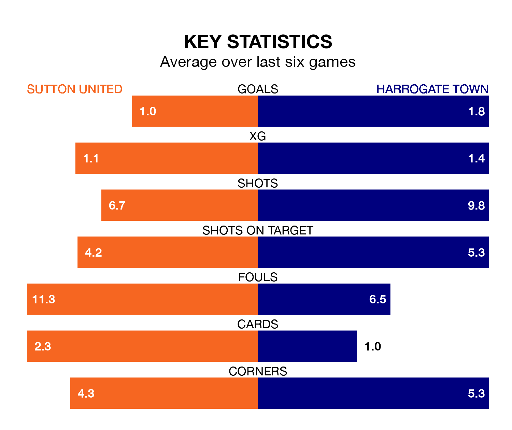

Sutton United face Harrogate Town at the VBS Community Stadium on late Tuesday looking to secure a first win in six EFL League Two games.
The Us have lost one and drawn four matches since they last earned three points – against AFC Wimbledon on December 26.
They face a Harrogate side who have won three and drawn one over that time.
Sutton are 23rd in the table after 28 games, of which they have won four and drawn nine, earning 21 points.
Harrogate are 12 places ahead of United in 11th, with 12 wins and four draws putting them on 40 points.
In the last 10 years, Sutton and Harrogate have played each other on nine occasions. Sutton won seven of them, Harrogate one, and they drew once.
On average, the Us scored 1.6 goals and Harrogate 0.8 in those matches.
Their last meeting was on January 28 2023, when Sutton won 1-0 away.
With 32 goals in 28 games so far this season, the Us are scoring at below the league average rate with 1.1 goals per game. And they are conceding more than average, letting in 56 goals at a rate of 2.0 per game.
Town are also below average scorers, with 1.3 goals per game, compared to a league average of 1.5. They have also conceded 1.3 goals per game.
Sutton's last match was on Saturday, a 1-1 draw against Walsall, with Craig Eastmond getting the goal for the Us.
Harrogate beat Forest Green Rovers 2-0 last time out, on January 13, with Abraham Odoh and Jack Muldoon on the scoresheet.
Tuesday's match will be refereed by Jacob Miles, who has taken charge of seven EFL League Two games so far this season, issuing no red cards and booking 28 players. He has not awarded any penalties.
The last Harrogate game Miles refereed was the 1-1 draw at home against Swindon Town on November 18. He is yet to oversee a match featuring Sutton this season.
Updated: 13:20 (UTC), 29/01/24